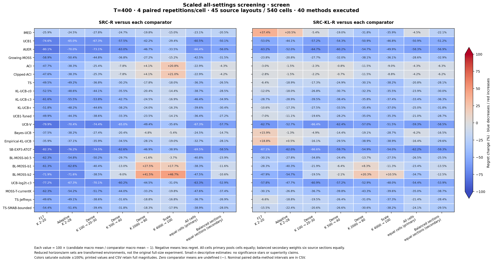

Original full-size experiment not run. All scientific failure paths are retained. The main heatmap compares the two reward endpoints against the canonical baseline configurations; all executed methods, including positive-service modes, are in all_cell_methods.csv and section_methods.csv.
Primary overall: every layout × law cell has equal weight. Secondary balanced overall: every source section has equal weight. Percentages compare the corresponding macro means and are not averages of cell percentages. No significance stars are shown; nominal small-sample intervals are descriptive and unadjusted.
